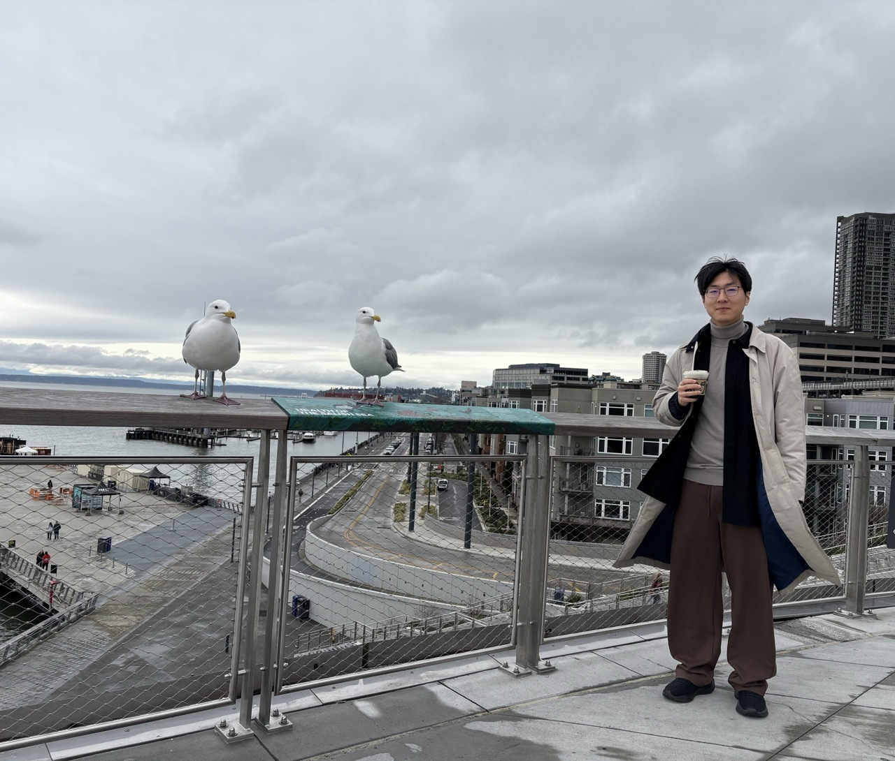

I am a Ph.D. student in Computer Science at the University of Illinois Urbana-Champaign (UIUC), advised by Prof. Yupeng Zhang. I am interested in cryptography and AI safety.
Email: tianyuz@illinois.edu

2025-Present: Ph.D. in Computer Science, University of Illinois Urbana-Champaign, advised by Prof. Yupeng Zhang
2021-2025: B.S. in Computer Science, Shanghai Jiao Tong University, advised by Prof. Yu Yu
In Music is Our Friend (Live in Washington and Albany, 2021) , Frobert Fripp said, "The world is different, but music remains hope for us all" and here are some pieces of music make me believe the statement is true
Feel free to email me with any ideas or music recommendations :)